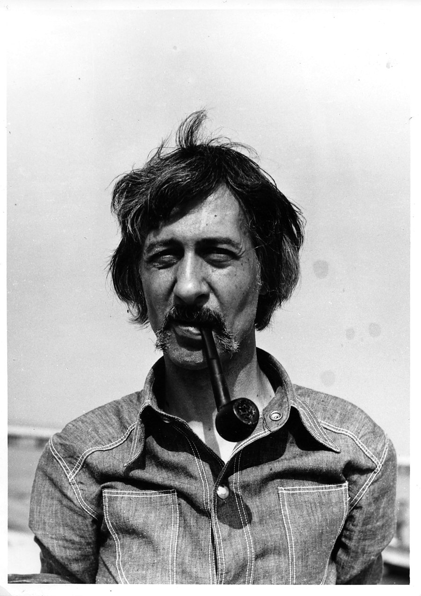

Sztuka jest tym,
co pokazuję
jako sztukę.
An interdisciplinary artist, theorist, and philosopher who argued that meaning is never fixed — it emerges from context.
w korpusie
12 punktów sztuki kontekstualnej
Freedom of Art?
Art et Transformation Sociale
W moim kontekście
Archive
Navigate the collected works, life events, intellectual network, and key ideas of Jan Świdziński's contextual art.
Timeline
From painting through conceptualism to contextual art — the path of a radical thinker.
Texts & Writings
Primary sources — manifestos, theoretical essays, critical reflections. Świdziński's own words.
Concept Encyclopedia
Key ideas, theories, and terms from contextual art and its intellectual context.
Bibliography & Resources
Publications, scholarly works, and essential references for researchers, art historians, and students of contextual art.
Festivals & Performances
International festivals, performances, and exhibitions — and the late exhibitions, symposia, and archives that secure Świdziński's legacy.
The Context Machine
Learn contextual art through play. Four modes — from formula experiments to progressive challenges.
Contextual Quiz
The Context Formula
Change the parameters — watch the meaning transform. Świdziński's core insight, made interactive.
Conceptual vs. Contextual
Drag each idea to the correct column. Kosuth's conceptualism or Świdziński's contextualism?
12 Points Challenge
Unlock each of the 12 Points of Contextual Art by demonstrating your understanding.